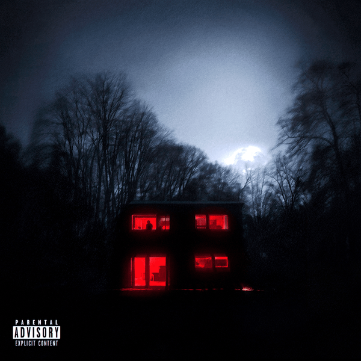
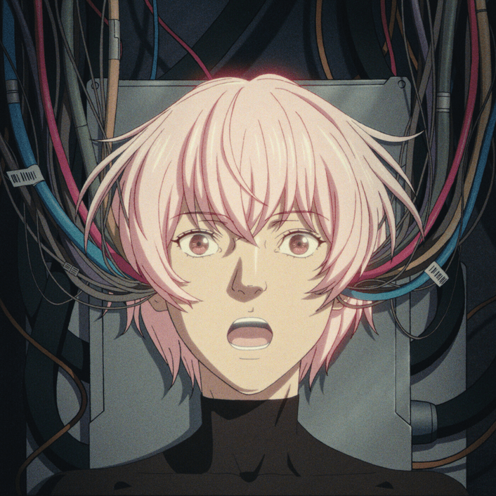

1. ¿Cuál de estos artistas tiene más oyentes mensuales en Spotify?
2. Nómbrame un álbum de JC Reyes:
3. ¿De quién es la canción MVLAN?
4. ¿Cómo se llamaba anteriormente C. Tangana?
5. ¿De este Ep, Cual es la canción con mas reproducciones?

6. ¿Cuál es el último álbum de Rosalía?:
7. ¿Cuál fue el álbum más escuchado de 2025?
8. ¿Cuántos oyentes de media tiene Slayter en Spotify?
9. ¿Cuál es el último álbum del artista Eladio Carrión?
10. ¿Cómo se va a llamar el próximo proyecto de Saiko?
11. ¿Qué artistas NO aparecen en el EP Los de la nueva era de Raul Clyde?
12. ¿Cuántas fechas hace Bad Bunny en España en 2026?
13. ¿Cuál canción no es colaboración entre Omar Courtz y De La Rose?
14. ¿En qué año salió el álbum YHLQMDLG?
15. ¿Cual es el titulo de este Album?

16. ¿Cual es esta canción?
Escribe aqui tu respuesta:
17. ¿Como se llama la cancion de este videoclip?